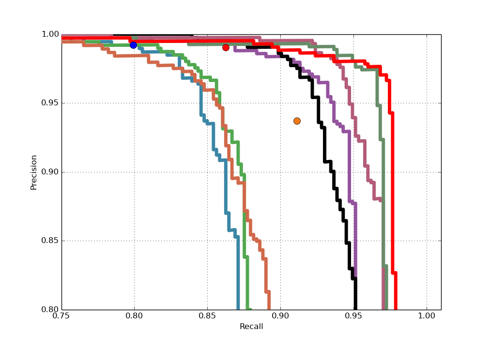
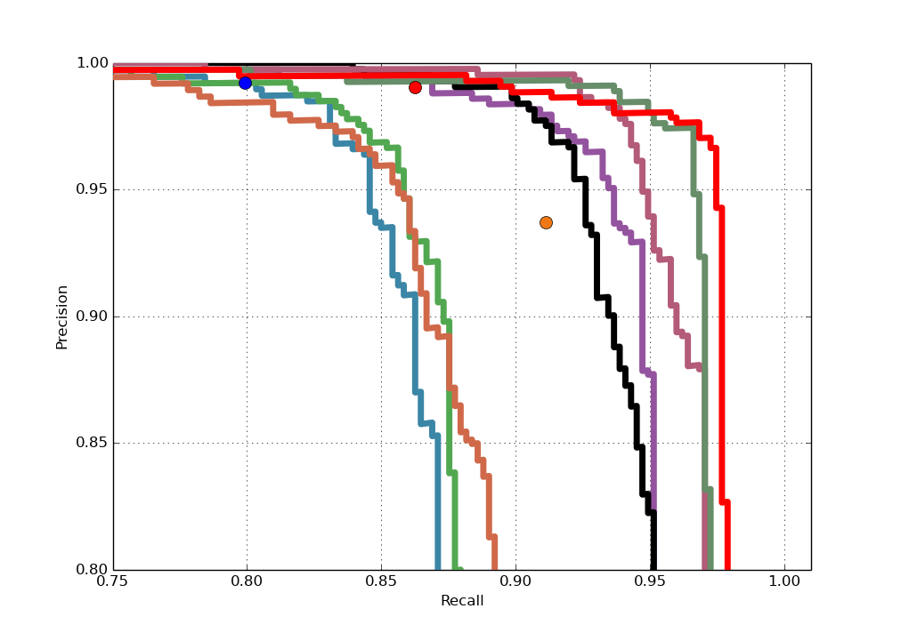
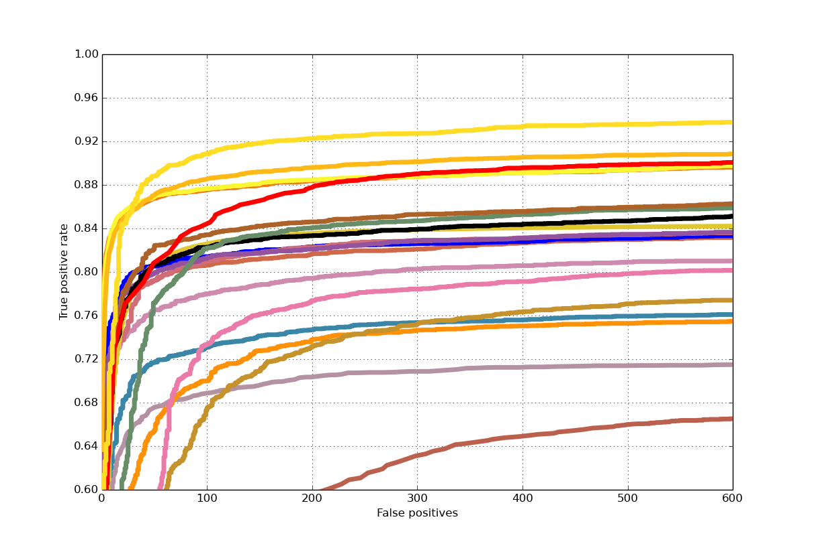
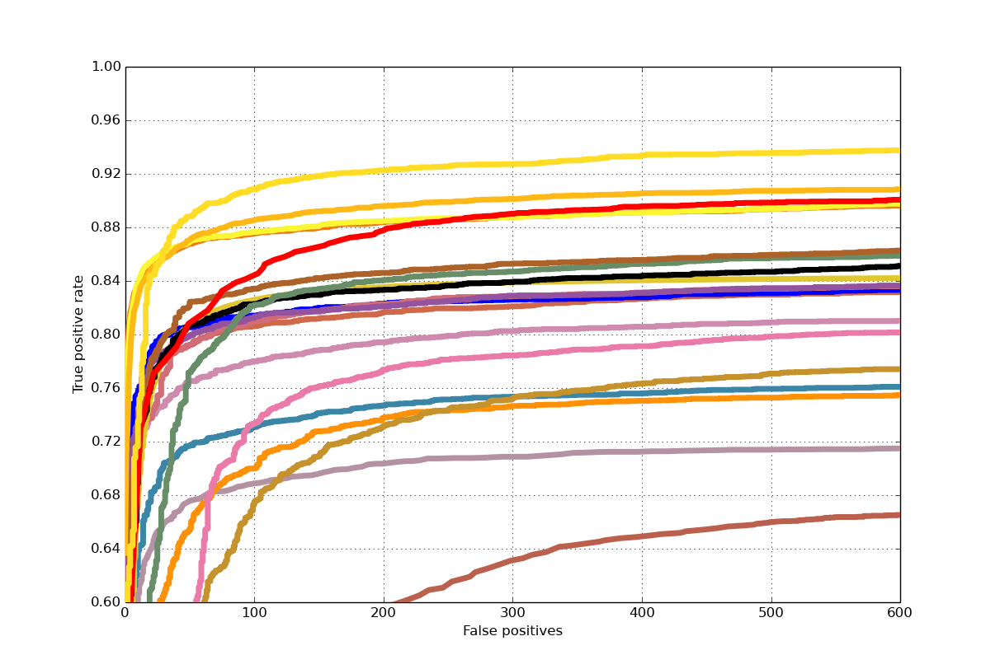

Jiali Duan is currently a master student at Univeristy of Chinese Academy of Sciences


ACM-TOMM 2017 Accepted
In this paper, we focus on isolated gesture recognition and explore different modalities by involving RGB stream, depth stream and saliency stream for inspection. Our goal is to push the boundary of this realm even further by proposing a unified framework which exploits the advantages of multi-modality fusion. Specifically, a spatial-temporal network architecture based on consensus-voting has been pro- posed to explicitly model the long term structure of the video sequence and to reduce estimation vari- ance when confronted with comprehensive inter-class variations. In addition, a 3D depth-saliency con- volutional network is aggregated in parallel to capture subtle motion characteristics. Extensive experi- ments are done to analyze the performance of each component and our proposed approach achieves the best results on two public benchmarks–ChaLearn IsoGD and RGBD-HuDaAct, outperforming the clos- est competitor by a margin of over 10% and 15% respectively.
@inproceedings{Isolated Gesture Recognition,
title={A Unified Framework for Multi-Modal Isolated Gesture Recogntion},
author={Jiali Duan, Jun Wan, Shuai Zhou, Xiaoyuan Guo, and Stan Z. Li},
conference={ACM-TOMM},
year={2017}
}
Below is an overview of the proposed AVC face detection method. It includes three main steps in the detection phase: visible component detection step, local region competition step, and the local to global aggregation step. AVC works by detecting only the visible components which would be later aggregated to represent the whole face.
Two half-view facial component detectors are trained, and for this we introduce a pose-invariant component definition via a regression based local landmark alignment, which is crucial for training sample cropping and pose-invariant component detection. Then the two learned detectors are mirrored to detect the other half view of the facial components. Next, the de- tected visible facial components go through a local region competition module to alleviate false detections, and finally a local to global aggregation strategy is applied to detect the whole face adaptively.

Samples in AFLW consist of 21 landmarks. We first calculate the mean shape of the whole database with samples normalized and missing coordinates excluded. Region in the mean shape which we want to map ie. left eyebrow and left eye for LE component is mapped directly to a new input sample by applying the transformation
Closed form solution can be derived as the following:
An intuitive visual interpretation is shown below, blue points are annotated landmarks while red points are mapped from meanshape. Positive samples extracted in this way retain excellent uniformity, which would be used for training LE and LM component detector.
The pose-invariant component mapping method is also used for preparing negative samples for bootstrapping
Feature: We choose NPD as our feature mainly for its two properties: illumination invariant and fast in speed because each computation involves only two pixels. For an image with size p = w × h , the number of features computed is C p 2 which can be computed beforehand, leading to superiority in speed for real world applications. With the scale-invariance property of NPD, the facial component detector is expected to be robust against illumination changes which is important in practice.
Training framework: The Deep Quadratic Tree (DQT) is used as weak classifier which learns two thresholds and is deeper compared to typical tree classifiers. Soft-Cascade as well as hard-negative mining are applied for cascade training. While individual NPD features may be ”weak”, the Gentle AdaBoost algorithm is utilized to learn a subset of NPD features organized in DQT for stronger discriminative ability.
Symmetric Component Detection: Below shows some example outputs by LE and LM detector respectively. As can be seen, our component-based detector has the inherent advantages under occa- sions of occlusions and pose-variations, where a holistic detector would normally fail. The detection of right eyebrow + right eye (RE) and right mouth + right nose (RM) can be achieved by deploying the detector of their left counterpart.
Local Region Competition: The core idea is to reject false alarms during merging (compete) while improving localization accuracy during aggregation (collaborate).
Aggregation Strategy: After deploying competitive strategy to exclude possible false positives, the task now is to ensure accurate localization of detection outputs. This is achieved by taking the full use of information from rects of different regions. We use rectangle as facial representation. Note that our proposed pipeline also applies to elliptical representation as the aforementioned workflow remains unchanged. (diagram)
AFW Result: We compare AVC with both academic methods like DPM, HeadHunter, Structured Models and commercial systems like Face++ and Picasa. As can be seen from the figure, AVC outperforms DPM and is superior or equal to Face++ and Google Picasa. The precision of AVC is 98.68% with a recall of 97.13%, and the AP of AVC is 98.08%, which is comparable with the state-of-the-art methods. Example detec- tion results are shown in the first row of Fig 8, note that we output rectangle for evaluation on AFW.
 

FDDB Result: We compare our results with the latest published methods on FD- DB including MTCNN, DP2MFD, Faceness-Net and Hyperface. Ours performs worse than MTCNN and DP2MFD which resort to powerful yet complex CN- N features but is better than Faceness-Net, which is also component-based but with the help of CNN structure. AVC gets 84.4% detection rate at FP=100, and a detection rate of 89.0% at FP=300.
 

Some Qualitative Results:

In this paper, we proposed a new method called AVC highlighting component- based face detection, which addresses pose variations and occlusions simultane- ously in a single framework with low complexity. We show a consistent compo- nent definition which helps to achieve pose-invariant component detection. To handle facial occlusions, we only detect visible facial components, and build a local to global aggregation strategy to detect the whole face adaptively. Exper- iments on the FDDB and AFW databases show that the proposed method is robust in handling illuminations, occlusions and pose-variations, achieving much better performance but lower model complexity compared to the corresponding holistic face detector. The proposed face detector is able to output local facial components as well as meanshape landmarks, which may be helpful in landmark detection initialization and pose estimation. We will leave it as future work for investigation.
{kind=link}